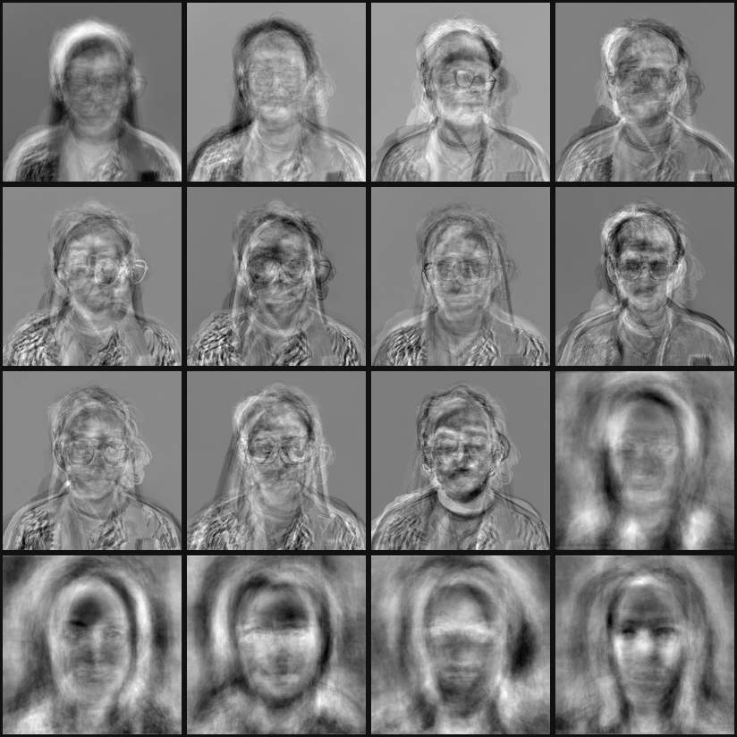
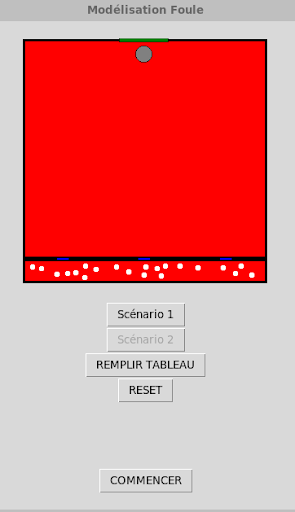
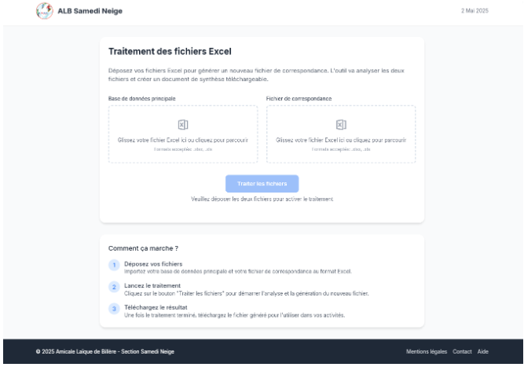
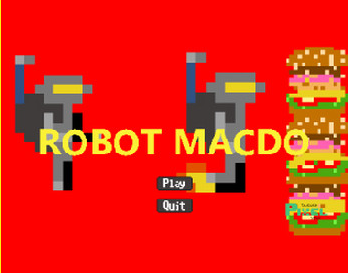

Facial Recognition with PCA
A Java/JavaFX system that identifies a person from a photo, or correctly rejects unknown faces, using the classic eigenfaces (PCA) method. I owned the architecture, code conventions and Git strategy, led integration, and implemented the projection and identification algorithms.
- Computed eigenfaces from the reduced covariance matrix (AᵀA), making a 40,000-dimension problem tractable.
- Designed a three-criterion recognise/reject decision (Hotelling's T² · reconstruction error · nearest distance), calibrated empirically.
- Evaluated with confusion matrices across three databases; documented the limits (lighting/pose).
Context
Five-person team project for the Traitement d'Images module at CY Tech (ING1): a facial-recognition system built on eigenfaces (PCA), entirely in Java with a JavaFX GUI, tested against three databases: the team's own faces, celebrities, and the Yale Face Database.
My role: Technical Lead & Lead Java Developer
- Responsible for the architecture: package structure, code conventions and the Git branch strategy, and for integrating the different modules written by the team.
- Personally implemented the hardest part: the projection and identification phases (projecting faces into eigenface space and the multi-criteria recognition decision).
- Most active on the linear-algebra, recognition and JavaFX files.
Technical highlights
- Efficient PCA: eigenfaces computed from the reduced covariance matrix AᵀA instead of AAᵀ, cutting compute drastically on 40,000-dimensional images (justified via the spectral theorem).
- Choosing K: kept enough eigenfaces for ≥90% cumulative explained variance, and found empirically that 90% beat 98%.
- Three-criterion decision (a face must pass all three): Hotelling's T², reconstruction error (97th percentile), and minimum Euclidean distance, with thresholds calibrated on a 70/30 known–unknown validation base.
- JavaFX GUI with a live threshold slider; full UML and a GDPR/ethics analysis.
Outcomes
Reliably recognises known faces and rejects unknown ones when capture conditions are near-identical (evaluated with confusion matrices). Main failure mode: strong lighting and head-tilt variation (a known PCA limit), with accuracy degrading on more varied databases.
Stack: Java 21 · JavaFX 21 · PCA/SVD. After Turk & Pentland (1991).
# adversarial search — pick the optimal move def minimax(board): if terminal(board): return None turn = player(board) best = max if turn == X else min return best( actions(board), key=lambda a: value(result(board, a)), ) def value(board): if terminal(board): return utility(board) scores = [value(result(board, a)) for a in actions(board)] return (max if player(board) == X else min)(scores)
CS50AI — AI with Python
All twelve projects implemented in Python — from breadth-first search and minimax through Bayesian networks and constraint satisfaction to Q-learning, a CNN and BERT attention.
Context
HarvardX's CS50AI (~100 hours), taken solo alongside my engineering degree. I completed all twelve projects — the certificate is here and can be verified with Harvard ↗.
The twelve projects
- Search — Degrees: breadth-first search over an actor/movie graph. Tic-Tac-Toe: an unbeatable minimax opponent (the excerpt shown).
- Knowledge — Knights: logic puzzles encoded as propositional sentences and solved by model checking. Minesweeper: an agent that keeps a knowledge base of sentences over cell sets and infers which squares are safe.
- Uncertainty — PageRank: Google's algorithm, implemented both by sampling a Markov chain and by iterating to convergence. Heredity: a Bayesian network inferring gene and trait probabilities across a family tree.
- Optimization — Crossword: constraint satisfaction with node/arc consistency (AC-3) and backtracking guided by minimum-remaining-values and least-constraining-value heuristics.
- Learning — Shopping: a k-nearest-neighbour classifier on real e-commerce sessions, scored on sensitivity and specificity because the classes are badly imbalanced. Nim: Q-learning — the agent is given no strategy and learns by playing itself.
- Neural networks — Traffic: a convolutional neural network in TensorFlow/Keras classifying German road signs across 43 categories, with the layer depth, pooling and dropout tuned experimentally.
- Language — Parser: a context-free grammar in NLTK parsing English sentences and extracting noun phrases. Attention: masked-word prediction with BERT, plus visualising the attention heads to see what each one actually looks at.
Why it matters to me
The value was the breadth in one continuous line: classical search and logic, then probabilistic reasoning, then classical ML, then deep learning and NLP — each one written from scratch rather than watched.
Stack: Python · NumPy · scikit-learn · TensorFlow/Keras · NLTK.
The solutions are not published: CS50's academic-honesty policy asks students not to share their work.

Crowd Evacuation Simulator
An agent-based simulation of how a crowd evacuates a room, using a social-force model with real-time animation.
- Vectorised pairwise repulsion forces and obstacle avoidance with NumPy.
- Compared Euler vs. Runge-Kutta integration against the analytical solution to quantify numerical error.
Context
A three-person team project modelling how a crowd evacuates a room. People are agents subject to repulsion forces from each other and from obstacles, animated in real time: a social-force model of pedestrian dynamics, with two scenarios (an open exit, and a pillar placed near the exit).
My role
Top contributor (13 of 25 commits), working across all three modules.
Technical highlights
- Physics core (play.py): vectorised NumPy computation of pairwise distances and repulsion forces (person–person and person–pillar), using matrix symmetry to halve the distance computation.
- Animation (model.py): a Tkinter canvas where each person is an oval whose velocity is updated each frame from the computed forces, with wall/exit collision handling.
- Numerical study (Euler_Runge.py): integrated a drag ODE with Euler vs Runge-Kutta and compared both against the analytical solution to quantify integration error.
Outcomes
Shipped and functional, with a real-time interactive animation of both scenarios.
Stack: Python · NumPy · Tkinter · Matplotlib.
Source hosted on CY Tech's internal GitLab (not publicly accessible); available on request.

Samedis Neige — Association Web App
A web app automating ski-trip logistics for a 1,213-member sports association, turning three data files into attendance sheets and skill-level groups.
- Lead author of the CSV processing engine (top contributor, 35/109 commits).
- Delivered the full lifecycle: needs analysis, design, build, demo.
Context
The Amicale Laïque de Billère (1,213 members) runs "Samedis Neige": Saturday ski day-trips for children, sorted into skill-level groups. The volunteer director prepared each trip by hand in Excel: exporting, renaming, sorting, filtering, cross-checking, marking attendance. We built a web app to automate all of it.
My role: backend developer
- Owned traitement.php, the CSV extraction-and-processing engine at the core of the app (17 commits on that file; 35/109 overall).
- Parsed the input files, generated the attendance call-sheets, and bucketed people into level groups (débutant → flèche, snowboard, instructors), with error detection for name inconsistencies, duplicates and missing data.
Technical highlights
- Vanilla PHP, no framework (the stack was school-mandated), with PHP-session auth and a date-archived history view.
- Tolerates messy real-world source files (.xlsx/.xlsb/.xlsm/.csv).
Outcomes & honesty
Shipped, functional, and demonstrated against the spec. Not deployed to the association; deployment and maintenance were explicitly out of scope. Hardening note: it uses MD5 for the admin password, which I'd migrate to password_hash() (bcrypt/argon2).
Source hosted on CY Tech's internal GitLab (not publicly accessible); available on request.
heIsWatching — Browser Extension
A cross-browser accountability extension that overlays distracting sites you've blocklisted, built on the WXT framework (Manifest V3).
- Typed design-token theming system and a typed multi-theme engine.
- Externalised JSON content and full English/French i18n.
Context
A personal accountability extension, a "guardian angel" for your browsing. When you visit a site on your blocklist, it overlays the page with an icon in an ancient, austere church style whose eyes follow the mouse, scripture verses, and music, nudging you away. It grew out of my interest in theology.
My role: solo developer & architect
I designed the architecture, theming system, data model and roadmap. Built with AI (Claude Code) assistance: I architected and directed it rather than hand-writing every line.
Technical highlights
- TypeScript on WXT, Manifest V3, targeting Chrome, Firefox and Edge (~1,230 LOC).
- A design-token system shared by the overlay and options pages, and a typed multi-theme engine: a template-literal
HexColortype plus a dev-time guard validate each theme, so adding a theme is a single typed object. - Externalised content (32 verses per language in typed JSON) and full fr/en i18n; a content-script full-screen overlay with cross-device sync and CSS keyframe animations.
Roadmap
A Bible-API verse set, anti-DevTools hardening, Safari/iOS support, per-site music, and local-only usage stats.

Robot MacDo — Game
A published, playable game: starting from a base game, I customised sprites, powers, boss behaviour and level design.
Context
My origin story. At around 10–11 years old I built a game, "Robot MacDo," through Toulouse Pixel School's teen game-development program (one semester). The program gave each student a working base game to customise. Alongside it I took private C# lessons from a University of Toulouse researcher.
What I did
Starting from the base game, I customised the sprites, powers, boss behaviour and level design.
Outcome
Published and playable, and the earliest project on this page: where I first started building software.